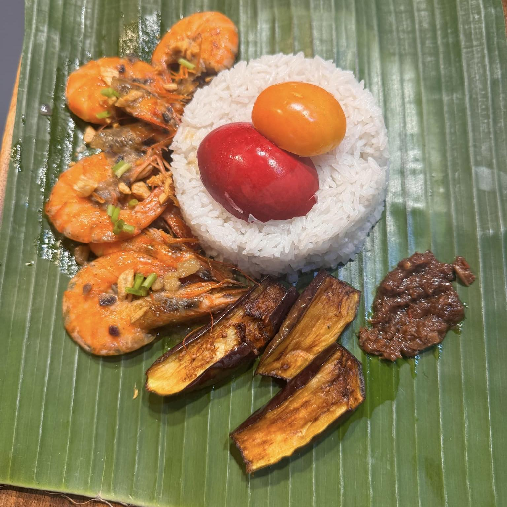
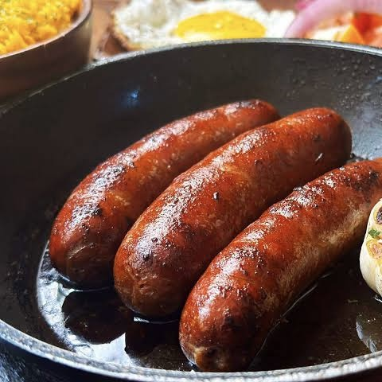

The ultimate comfort food, our pork adobo is simmered to perfection in a blend of soy sauce, vinegar, garlic, and spices.
Dinakdakan
₱ 149
A savory and creamy dish made with tender pork cuts, Dinakdakan is packed with bold flavors that will transport you straight to the heart of the Philippines. Served on a banana leaf, this dish is perfect for adventurous food lovers.

Halabos na Hipon
₱ 179
Succulent shrimp cooked in their own juices, seasoned lightly to let their natural sweetness shine. This dish is a celebration of freshness and simplicity, perfect for seafood lovers who enjoy pure, clean flavors.

Hungarian Sausage
₱ 129
Smoky, juicy, and packed with bold flavors, our Hungarian sausage offers a slight spicy kick that’s perfect for meat lovers. Each bite is a satisfying burst of flavor that will keep you coming back for more.
Lechon Kawali
₱ 169
Crispy on the outside, tender and juicy on the inside—our golden pork belly is fried to perfection, delivering a satisfying crunch with every bite. Paired with a side of our signature dipping sauce, this dish is pure indulgence and a crowd favorite.
Longganisa
₱ 169
Sweet, garlicky, and oh-so-nostalgic, our longganisa is a beloved Filipino sausage that’s perfect for any time of the day. It’s a comforting reminder of lazy breakfasts and family gatherings around the table.
Pancit Canton
₱ 149
A must-have at every Filipino gathering, our stir-fried noodles are loaded with vegetables, meat, and seafood. Each forkful is a burst of flavors, enhanced by the earthy charm of the banana leaf it’s served on.
Pritong Isda
₱ 149
Fresh and flavorful, our fried fish is seasoned just right and fried until golden brown. Simple yet satisfying, it’s a dish that reminds you of seaside lunches and the joy of uncomplicated meals.
Pritong Manok
₱ 159
A Filipino staple that never goes out of style. Our fried chicken is marinated for hours and fried to a golden crisp, locking in all the juices and flavors. It’s the perfect combination of simplicity and satisfaction.
DRINK AND DESSERT
Sago't Gulaman
₱ 35
Cool down with this quintessential Filipino drink! Sweet yet refreshing, the blend of chewy sago, jiggly gulaman, and caramelized sugar syrup pairs perfectly with every meal on our menu.
Turones at Sorbetes
₱ 85
Sweet cravings? Our crispy banana turon paired with creamy vanilla ice cream and a luscious caramel drizzle is an irresistible dessert that balances the crispy and creamy in every bite.